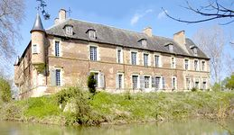
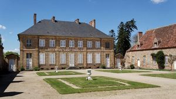
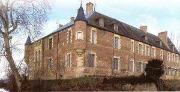
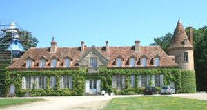
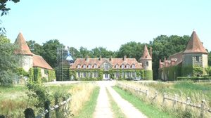
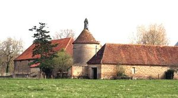
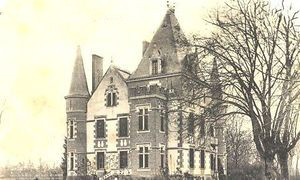

Recensement Jean-Claude Truffet
| Département | 03 — Allier |
| Canton | Neuilly-le-Réal |
| Commune | St-Gerand-de-Vaux |
| Type d'édifice | Château |
| Période d'origine | XVI |







Plusieurs châteaux à St-Gérand; du Vaux, de Guichardots du XIXe siècle, d'Hauterives du XVIIIe siècle, de Royer du XVIIe siècle et de St-Gérand du XVI-XVIIIe siècle. St-GERAND, le fief de St-Gérand est connu depuis le XIIIe siècle par sa taille de 1350 mètres carré x 2 sans doute le premier par son comté de 135000 hectare au XVIIe siècle et ses propriétaires; Coeur, Soreau, Lévis-Ventadour, Tour d'Auvergne, Rohan, Orry et Bertin. EN 1351 par Blayn de Chouvigny dont le fils Philippe sera chambellan du duc Louis II de Bourbon au XVe siècle sera cédé au célèbre Jacques Coeur et après la confiscation des biens de ce dernier, le domaine revient à Catherine de Maignelay, veuve de Jean Sureau et mère d'Agnès Sorel la favorite de Charles VII, son arrière petite-fille Anne Sureau héritière épouse Gabriel de la Guiche gouverneur de la Bresse, Jean-François de la Guiche (1569-1632), maréchal de France et gouverneur du Bourbonnais épousa Anne de Tournon héritière de Chabannes seigneur de la Palice veuf il convole avec Suzanne, la fille du premier lit, Suzanne de Longaunay, épouse Maximilien de la Guiche, leur fils Bernard à son décès en 1696 sans descendance, les biens reviennent à Marie de la Guiche duchesse de Ventadour. La petite fille de la duchesse en 1717 cède St-Gérand à un financier périgourdin Louis Mathieu de Bertin, passe ensuite à Philibert Orry contrôleur des finances, en 1763 passa à la famille Causabon qui l'habité encore à la Révolution, le château aliéné plusieurs fois appartient aujourd'hui à M.Marc -Eric Chambon.
HAUTERIVES était au début une école d'officiers de Cavalerie, vendu comme bien nationale à la Révolution habité de nouveau qu'en 1870 est demeure depuis dans la même famille, une restauration s'imposé elle fut réalisée de 1981 à 1993 par les actuels propriétaire M. Jacques de Chacaton et Mme Cornubert de Saint-Aubin. GUICHARDOTS, château construit en 1875. Edifice représentatif de la vie mi-mondaine mi-champêtre menée par certaines familles aisées avant la guerre de 1914. ROYER, château datant du XVIIe, XIXe siècle. Royer est un ancien domaine appartenant à la terre de Bel Air, reconstruit en maison de plaisance au XVIIIe siècle sans doute par les Michel, famille de fonctionnaires royaux dont est issu le poète moulinois Théodore de Banville. La propriété changea de main au cours des XVIIIe et XIXe siècles; en 1874 s'y installa une colonie de fouriéristes, groupés sous la direction de Hardy, ingénieur des Ponts et Chaussées. Malgré les efforts de chacun, l'expérience tourna court et Hardy mourut ruiné à Lyon, non sans avoir participé aussi à la Commune.
St-Gerand, grand château Renaissance du XVIe et XVIIIe siècle, composé d'un logis central encadré de deux ailes en retour, il présente l'aspect d'une demeure classique, en briques et pierre. L'aile de gauche conserve un magnifique escalier à quatre volées droites. L'édifice se présente comme un ensemble de bâtiments situés au milieu d'un parc clos. Un superbe portail d'ordre dorique à bossages permettait d'accéder à l'intérieur de la propriété.
Hauterives, château édifié de 1600 à 1610 puis remanié aux XIXe siècle. Composé d'un logis encadré de deux ailes en retour, il présente l'aspect d'une demeure classique, en briques et pierre, des communs. Le logis noble, de style néo-classique, est percé de travées régulières et comporte un ensemble d'appartements ornés de décors, grand salon à dessus-de-porte peint, les communs, de style bourbonnais traditionnel, en retour d'équerre sur la cour d'honneur, présentent un appareil de briques losangées polychromes de grande qualité.
Guichardots,édifice de style néogothique comprenant un corps de logis carré cantonné de tours rondes et un grand pavillon carré. principe de l'asymétrie pondérée, emploi du mur pignon, utilisation du jeu des matériaux à des fins décoratives. Royer, ancien domaine appartenant à la terre de Bel Air, reconstruit en maison de plaisance au XVIIIe siècle, assez vaste, comporte un corps de bâtiment unique à un seul niveau, couvert d'un toit à croupe percé de lucarnes, flanqué de deux tours circulaires. La travée centrale, où est ouverte la porte d'entrée, est surmontée d'un mur pignon à fronton triangulaire. La cour d'honneur, en regard de la façade, est bordée de communs dont les angles nord-ouest et sud-ouest sont flanqués de deux tours polygonales.
Famille Causabon
"
Château de saint-Gèran, de hauterives, des Guichardots et de Royer à Saint-Gérand de Vaux.